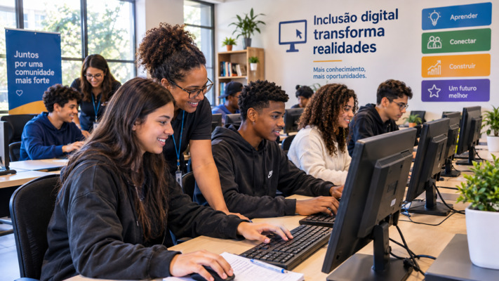

Projeto Reconecta
Recuperação de computadores e doação para escolas públicas.
Saiba maisPromovemos o acesso às tecnologias digitais para jovens e adultos em situação de vulnerabilidade, transformando descarte eletrônico em oportunidades de futuro.

Recuperação de computadores e doação para escolas públicas.
Saiba maisCursos gratuitos de informática básica e navegação segura.
Saiba mais